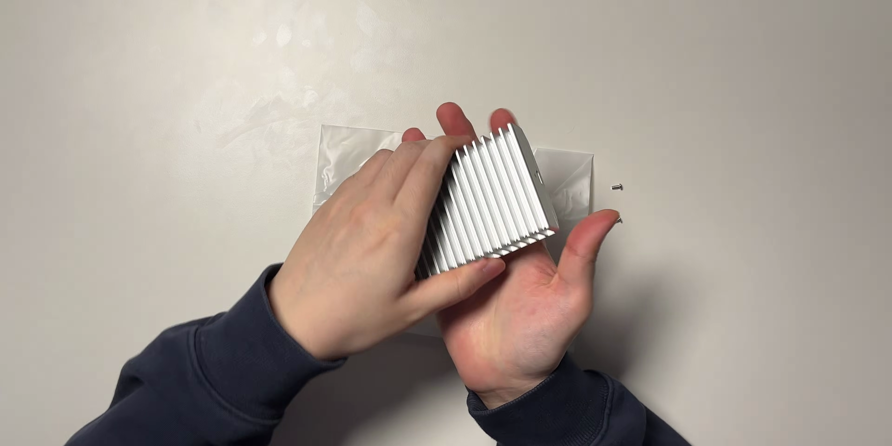

애플 맥미니를 사용하면서 외장 SSD에 대한 고민이 많으셨죠? 애플의 내장 용량 업그레이드를 돈주고 하고 싶지 않다면, 저렴한 솔루션을 찾는 이 포스팅이 도움이 될 것입니다. 2TB의 대용량 외장 SSD를 찾고 계신다면, 제가 추천하는 OWC 익스프레스 1M2를 알아보세요.

애플 기기의 용량 선택에 관한 고뇌
- 애플의 맥미니는 기본 용량이 256GB로 매우 적은 수준이다.
- 업그레이드 비용이 30만 원에서 360만 원으로 다양하다.
- 많은 사용자들이 외장 SSD로 대체할 것을 추천하고 있다.
애플의 맥미니는 저장 용량이 적어 사용자의 불만이 많지만, 자체 업그레이드 비용이 비쌉니다. 이에 대부분의 사용자들은 외장 SSD 사용을 고려하게 됩니다.

OWC 익스프레스 1M2 제품 소개
- 미국 OWC에서 제작한 SSD 인클로저이다.
- 1988년에 설립된 역사 깊은 회사의 제품이다.
- 미국 내에서 이미 인정받은 품질과 성능을 자랑한다.
OWC 익스프레스 1M2는 미국에서 1988년에 설립된 OWC의 제품으로, 품질이 뛰어난 SSD 인클로저입니다.

OWC 익스프레스 1M2의 스펙
- 장착된 칩셋은 AS 미디아 ASM 2464 이다.
- 이 칩셋은 썬더볼트 4, USB 4를 지원한다.
- 최대 전송 속도는 초당 40GB로, 실제 속도는 3,200MB 내외이다.
OWC 익스프레스 1M2는 40GB의 이론적 전송 속도를 지원하며, AS 미디아 칩셋으로 성능이 뛰어난 SSD 인클로저입니다.

이 제품의 조립 방법
- 조립은 나사를 제외하고 세 가지 부품을 빼고 덮개를 닫는다.
- 기판에 SSD를 올려서 나사를 사용해 조인 후 덮개를 다시 덮는다.
- 마지막으로 USB로 연결하여 포맷 설정을 한다.
조립 과정이 간단하며, 나사 풀고 SSD 장착 후 포맷을 거치면 사용이 가능합니다.

속도와 온도 테스트
- 디스크 스피드 테스트 앱을 사용하여 속도와 온도를 측정했다.
- 읽기 속도가 최고 3,180MB/S에 도달했다.
- 온도는 49도로, 매우 안정적인 성능을 보여주었다.
OWC 익스프레스 1M2의 테스트 결과는 개선된 속도와 낮은 온도를 보여줬습니다.
Tags: #애플 맥미니 #외장 SSD #OWC 익스프레스 1M2 #SSD 리뷰 #스펙 #속도 테스트 #온도 테스트